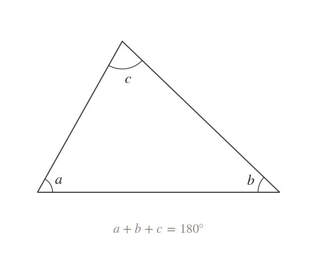

A triangle is half a turn
The three angles of a triangle add to the same as a straight line.
The three angles of a triangle add to the same as a straight line. Tear the three corners off a paper triangle and they fit together along a straight line.